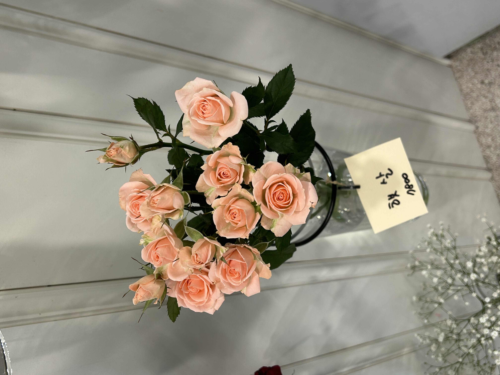
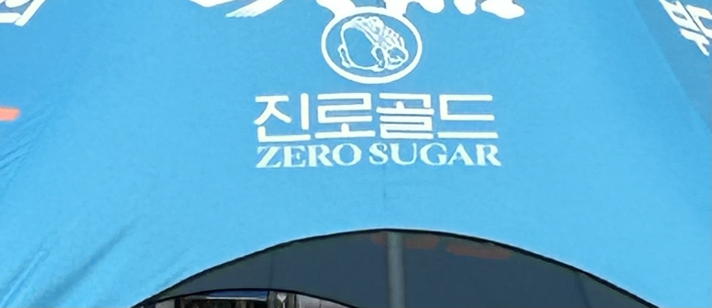
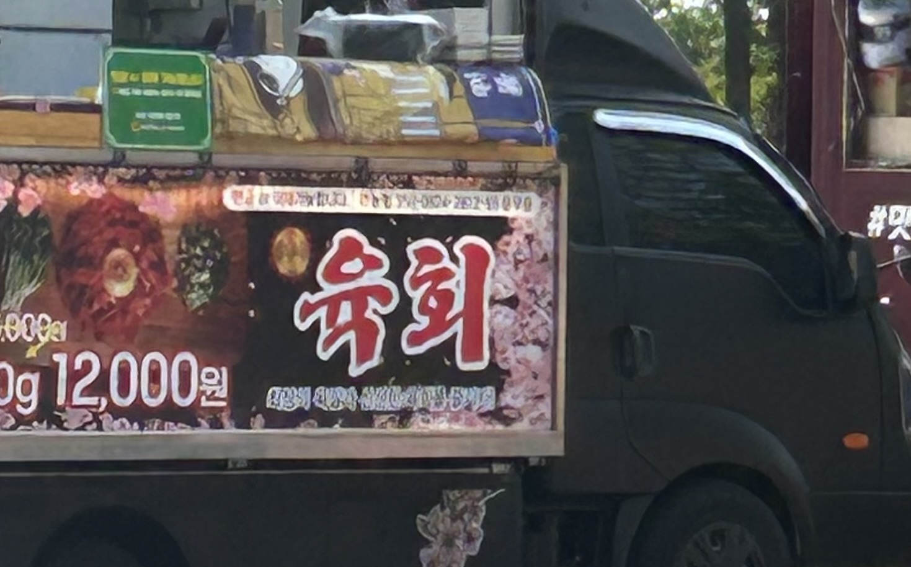
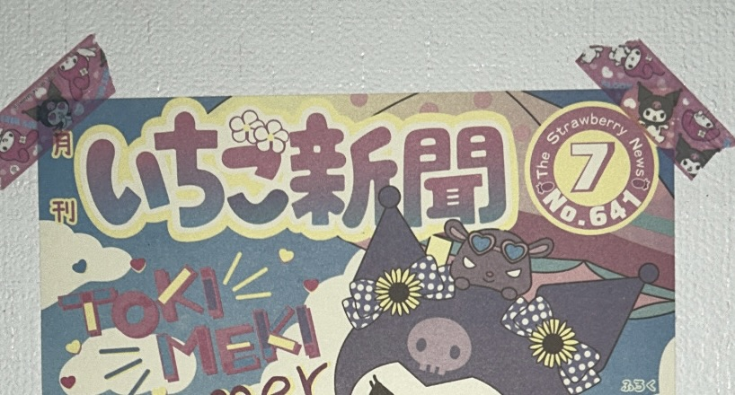
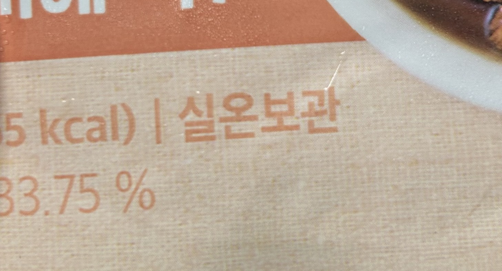
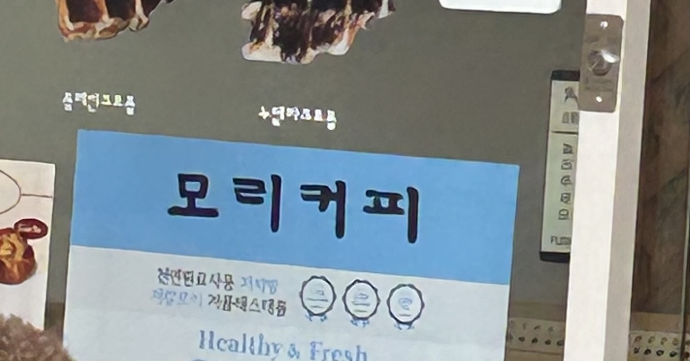
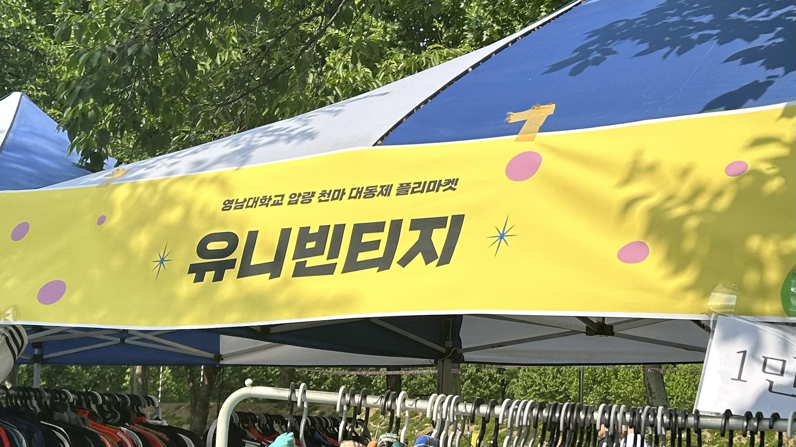
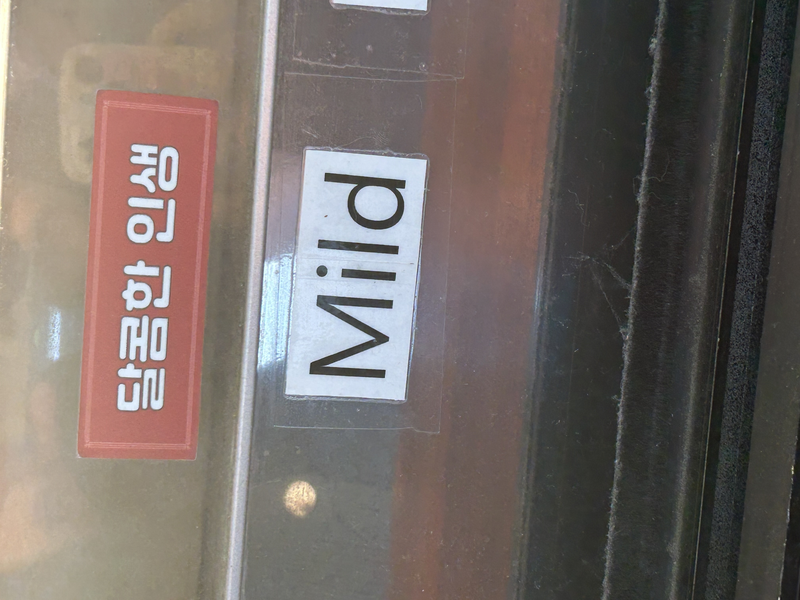

햇살
'햇살'이라는 이름을 가진 분홍색 꽃이다. '햇살'은 해에서 나오는 줄기 또는 그 기운을 뜻히는 순우리말 단어이다. 꽃에 어째서 햇살이라는 이름이 붙여진 것인지 궁금해졌다.
아기자기
천막에 '아기자기'라고 쓰여있다. '아기자기'는 여러 가지가 오밀조밀 어울려 예쁜 모양을 뜻하는 순우리말 단어이다. 물건을 파는 곳에 아기자기라는 간찬이 있으니 귀여운 물건들을 팔 것이라는 생각이 든다.
골드
'진로골드'라는 단어가 적혀힜다. '골드'는 '금'이라는 뜻의 영어 단어를 왜래어 표기법으로 적은 것이다. 어떤 특징을 보고 골드라는 이름을 붙인 것인지 궁금하다.
육회
트럭에 '육회'라고 적혀있다. '육회'는 소의 살코기를 잘게 썰어 갖은 양념을 하여 날로 먹는 음식을 뜻하는 한자어이다. '고기 육', '회 회'자를 사용한다.
튀어
천막에 '튀어'라는 글자가 있다, '튀다'는 탄력 있는 물체가 솟아오른다는 뜻의 순우리말이다. 여러 의미를 포함하는 단어를 사용해 궁금증을 유발한다.
이치고신간
일본어로 '이치고신간'이라고 적혀있다. 딸기신간이라는 뜻으로 신문을 컨셉으로 한 포스터이다.
실온보관
'실온보관'이라고 적혀있다. 실온은 방 안의 온도라는 뜻이며 '집 실', '따듯할 온'자를 사용한다. 보관은 물건을 맡아서 간직하고 관리하다는 뜻이며 '지킬 보', '대롱 관'자를 사용한다.
커피
카페 메뉴판에 '모리커피'라고 쓰여있다. '커피'는 커피나무의 열매를 갈아서 간 가루로 대체하는 단어가 없는 왜래어이다.
빈티지
천막에 '유니빈티지'라고 쓰여있다. '빈티지'는 낡고 오래된 것이라는 뜻의 대채하는 단어가 없는 왜래어이다.
mild
유리창에 'mild'라고 쓰여있다. 'mild'는 영어 단어로 '가벼운, 순한'이라는 뜻이다. 어째서 영어로 표기한 것인지 궁금하다.
돌아가기